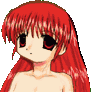

- Welcome to Touhou Wiki!
- Please register to edit. For assistance, check in with our Discord server or IRC channel.
Vivit (Erich's Daughter)
| ビビット Vivit biβit̚to̞ / vivit̚to̞ VIVIT-captured-, びびっと | |
|---|---|
|
 Vivit in Shuusou Gyoku
| |
| Species |
Human(?) |
| Location |
Seihou World (Earth) |
Music Themes | |
| |
Appearances | |
| Official Games | |
| |
- Note: This article is part of the Seihou Project by the Doujin circle "Shunsatsu sare do?".
- For other uses, see Vivit (disambiguation). This Vivit is not to be confused with VIVIT, VIVIT-r, and normal stage enemies.
Vivit (ビビット Bibitto) is Erich's daughter who is the Final boss of Shuusou Gyoku. Decades ago, a disastrous accident happened cause by cactus energy got Vivit trapped in a machine in what is called the "Other Dimension". She was eventually rescued by VIVIT.
Character Basis[edit]
Name[edit]
Her name is Vivit (ビビット). Vivit in Latin means "he/she/it lives". On Shuusou Gyoku's dialogues, she was called "VIVIT-captured-", probably to distinguish her from VIVIT easily. In Kioh Gyoku, VIVIT referred to her name in hiragana (びびっと).
Design[edit]
Vivit's design in Shuusou Gyoku shows that she has red eyes and long red hair. She appears to have white angel wings and is nude (but her body is indescript).
Vivit's Appearances[edit]
- Shuusou Gyoku
- Main article: Shuusou Gyoku Story
Vivit got trapped in a machine decades ago in the "Other Dimension". She didn't know her own existence and was in pain. She was eventually rescued by VIVIT.
- Kioh Gyoku
- Main article: Kioh Gyoku Story
In Kioh Gyoku, she doesn't make an appearance with her own machine, but according to "Dokuden P no Owabi?" in a text file included in the Omake file of Kioh Gyoku, it appears that VIVIT's Boss attack is performed by Vivit, and, in fact, in the sixth stage of Kioh Gyoku, against the field of enemies, VIVIT uses an attack form that seems to have been created by Vivit. On a plus note, Vivit was referenced by VIVIT when VIVIT won against herself.
Relationships[edit]
Erich[edit]
Erich is Vivit's father. The full detail to their relationship is unclear.
VIVIT[edit]
VIVIT is Vivit's fathers maid. When VIVIT was created, she was based on Vivit, so their appearances are very similar to each other. When VIVIT first saw what Vivit looked like, she was surprised to how similar she looks to her and was confused. Once she finds out who Vivit was, she starts to call her "Milady" or "Lady Vivit". VIVIT likes Vivit, and thinks she's a nice person. There is no information however to what Vivit thinks of VIVIT.
Additional Information[edit]
- There are actually several Vivit's, namely VIVIT (Shuusou Gyoku's heroine), VIVIT-r (Banshiryuu's heroine), and normal stage enemies (Banshiryuu's 4B stage).
- Vivit is the only character in the whole of Seihou and Touhou to use feather bullets.
- Vivit's the only one in Kioh Gyoku without an official profile.
Fandom[edit]
Official Sources[edit]
- 2000/12/30 Shuusou Gyoku
| This page is part of Project Characters, a Touhou Wiki project that aims to write proper descriptions for all official characters of Touhou Project. Please keep the character page guidelines in mind when contributing. |